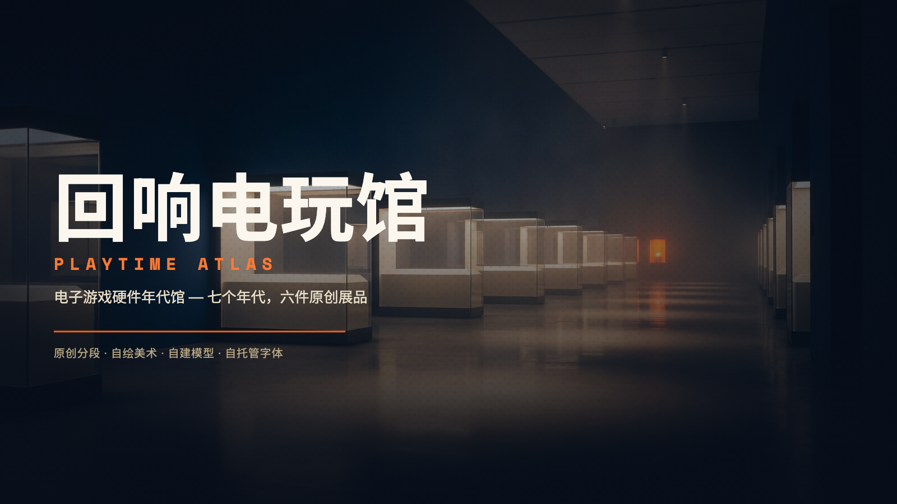

01 / FOUNDATION
统一设计令牌
同一套令牌驱动网页、SVG 资产与 3D 材质。
design-tokens.json 是唯一事实来源，CSS 与 JS 变体均由此生成。
配色 · 深墨蓝 / 暖纸白 / 信号橙
语义色
字阶
间距 / 圆角 / 阴影
02 / TYPOGRAPHY
自托管许可字体
全部字体采用 SIL Open Font License 1.1，下载后按实际用字子集化并存于
/assets/fonts/，运行期零外部字体请求。中文子集覆盖本包用字
— 个。
03 / ICONS
原创图标集
全部为手绘路径，24×24 网格、1.5 描边、圆端点、currentColor 可换色。
点击任意图标复制其雪碧图引用。
04 / ERA POSTERS
年代海报
七个年代，七张 1200×1800 海报。关键帧由生成式模型产出且不含任何文字， 中文标题、编号、年代与正文全部由 SVG 精确排版层叠加，因此零乱码。
05 / COVERS
封面
1600×900 横幅，供年代展厅头图、卡片封面与站点主视觉使用。
06 / VITRINES
展柜
每件展品配一套展柜：玻璃罩、暖光顶条、底座与哑光纸铭牌，柜内放置该展品的实机渲染图。
07 / HARDWARE
跨时代硬件展品
六件原创虚构展品，由参数化网格直接建模为标准 GLB，可直接载入 three.js / 任意模型查看器。共享同一套馆内材质，形成一次收藏而非六次拼凑。
当前环境未启用 WebGL，已切换到技术插画降级图。
08 / DEGRADATION
降级与离线
主视觉缺失、模型不可用、WebGL 被禁用或网络中断时，馆内仍有可读可用的呈现。 所有降级图形同样是本馆原创资产。
降级策略
- 模型 3D → 技术插画：每件展品都附带由真实网格正交投影生成的工程制图 SVG，即使完全没有 WebGL 也保留结构与规格信息。
- 3D → 渲染图：GLB 加载失败时退到 1024×1024 静态渲染图。
- 渲染图 → 占位图：连静态图也缺失时，退到本馆自绘的占位图形。
- 字体：全部子集化本地托管，缺字时由系统字体回退，不阻塞布局。
- 离线：站点无任何外部请求，断网后仍可完整浏览。